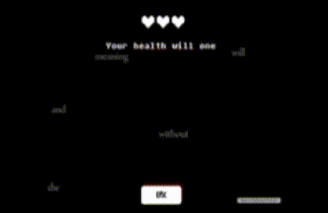
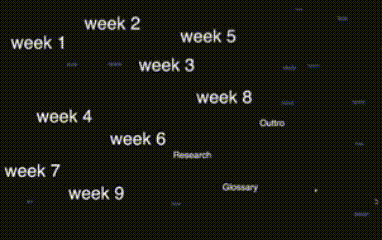
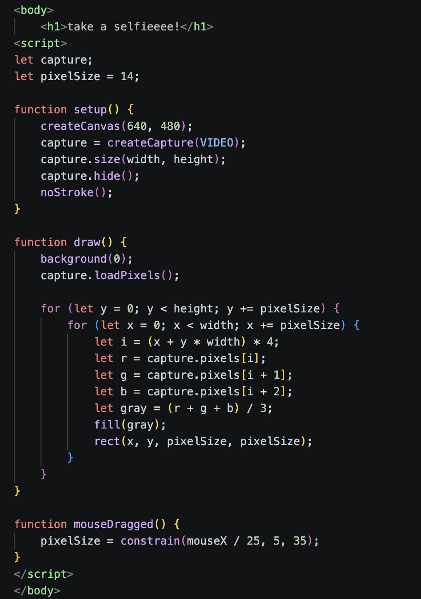
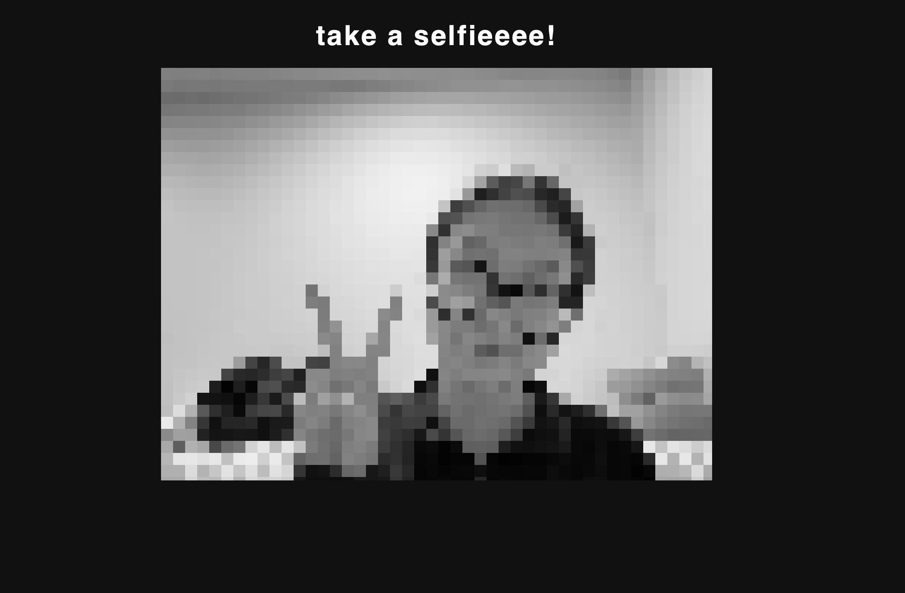

PRE-CLASS HUNT 'N' GATHER

View reflection
I found this creative coding work through this week’s Hunt ‘n’ Gather. This p5.js project by Yutang Mu, simulates the pain and anxiety caused by technological determinism. What I found especially interesting was how the background buzzing sound, the clicking noises of medical equipment, and the final flatline monitor sound work together with the trembling text and buttons to create tension, nervousness, and give goosebumps to the audience. The audiovisual interaction makes the experience feel immersive and emotionally uncomfortable, almost like being trapped inside a failing medical system.
This design inspired my own p5.js practice by showing me how small interactive details can strongly influence emotional atmosphere. It made me think more carefully about how animation effects such as shaking text, glitch movement, timed audio, and unstable interfaces could be used in my own space-themed website to create feelings of uncertainty, isolation, and tension.
p5.js Experiment 1

View reflection
To play around with, p5.js I created a homepage here. Each text element uses a unique animated style: some are arranged vertically, some in a circular formation, some horizontally, and others with a bouncing/jumping motion. Every labeled item is clickable and links to its corresponding external HTML page (e.g., clicking Week 1 opens the Week 1 page).
I also added floating non-clickable decorative words that continuously drift across the screen as background elements — they move freely but have no interaction function.
For mouse interaction, I programmed the canvas to draw tiny white squares that follow the user’s mouse cursor in real time, with a slow fade-out effect so the trail gradually disappears over time.
p5.js Webcam Experiment


View reflection
In this experiment, I used p5.js to build a low-pixel black-and-white webcam page. I converted real-time camera footage into retro blocky monochrome visuals. I thought the low-pixel will work well with the black-and-white filter, however it looked a bit creepy by the end. XD